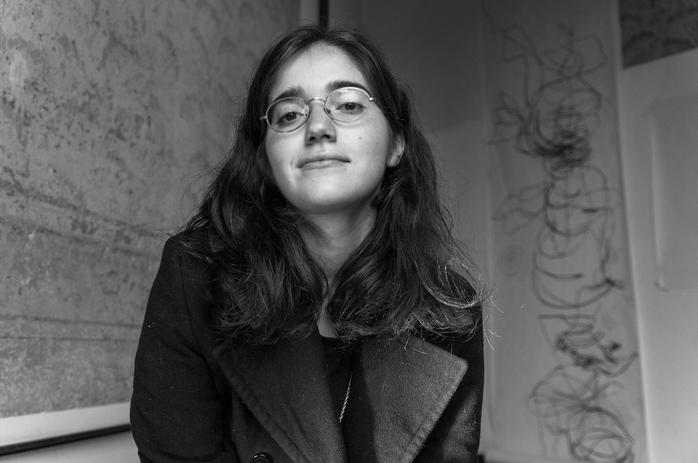
- Experiencia 1
Lugar: Pabellón CePIA, Facultad de artes.
Materiales: Fibrones, tinta y ferrite de color negro con cola vinílica.
El eje transversal de esta acción realizada en tres partes consiste en la percepción háptica de mi cuerpo y el registro sincrónico como huella de dicha percepción dibujada por la mano derecha sobre el soporte.

- Experiencia 2
Lugar: Centro Cultural Casa de Pepino.
Materiales: Carbonilla y lápiz de grafito.
División del tiempo en dos partes
Primera parte: El soporte papel se encuentra en dirección horizontal, en el suelo y
ocupando una posición central con respecto a la puerta de ingreso a la sala.(
Segunda parte: El soporte se encuentra en dirección vertical, sobre la pared izquierda, con respecto a la puerta de ingreso a la sala).
Final: Al final de cada una de las etapas, los espectadores abrieron a una instancia de dialogo.
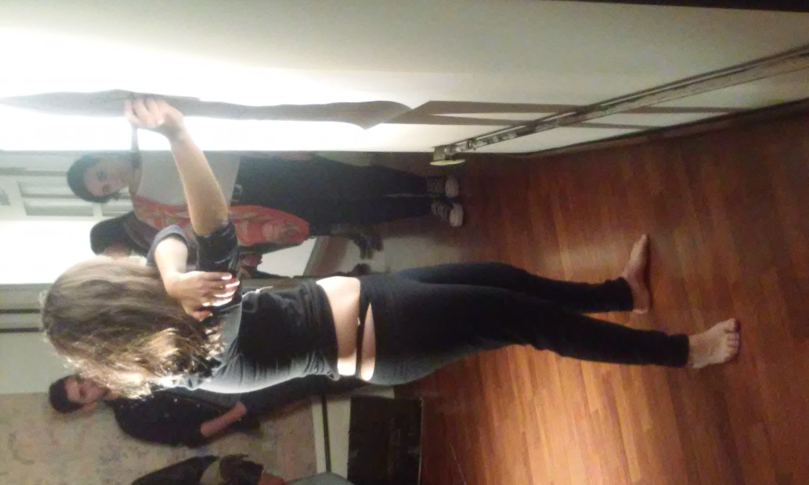
- Experiencia 3.
Lugar: “Centro Cultural Casa de Pepino”.
Materiales: ferrite negro con cola vinílica- lápiz.
División del tiempo en dos partes
Primera parte:Recorrido de la mano izquierda sobre el cuerpo, por lo que registro esas sensaciones con la mano derecha, la cual dibuja con un pincel cargado de ferrite con cola vinílica. El soporte de las representaciones se encuentra adherido al piso, en una posición central de la sala.
Segunda parte: Recorrido de la mano izquierda, registro con la mano derecha, la cual
dibuja con lápiz en esta etapa. El soporte de las representaciones se encuentra adherido a la pared cercana a la entrada.
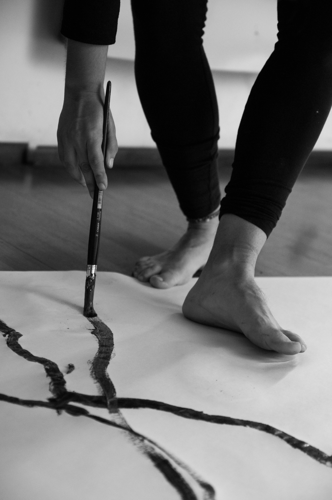
- Experiencia 4
Lugar: Centro Cultural Casa de Pepino.
Material: marcador con tinta al agua, color negro.
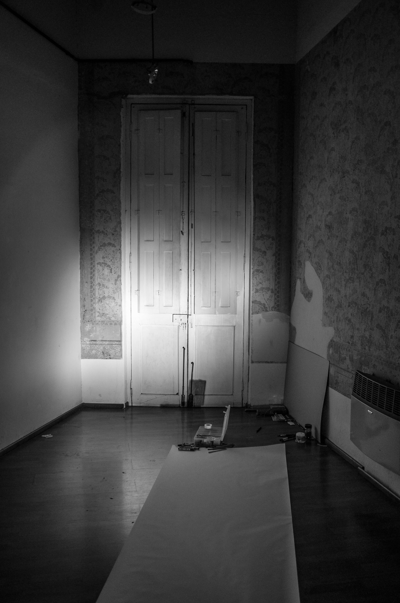
- Experiencia 5.
Lugar: Centro Cultural Casa de Pepino.
Materiales: marcador con tinta negra.
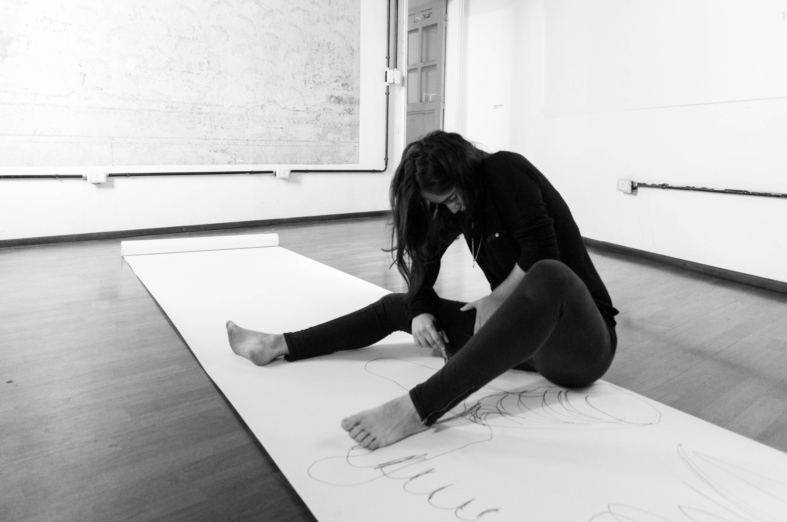
- Experiencia 6.
Lugar: Departamento particular, Córdoba.
Materiales: marcador con tinta negra.
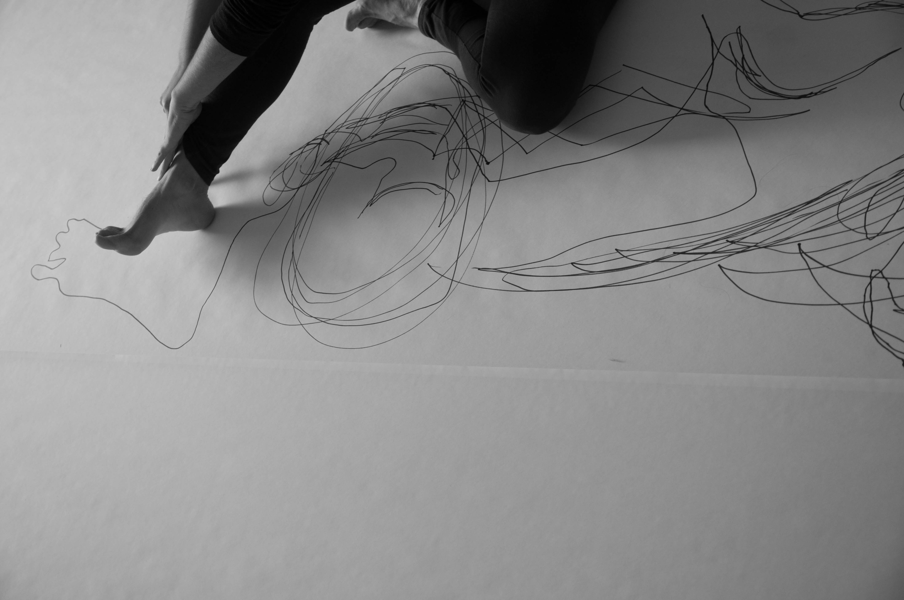
- Experiencia 7.
Lugar: Centro Cultural Casa de Pepino.
Materiales: Papel, fibrón, tierra negra.
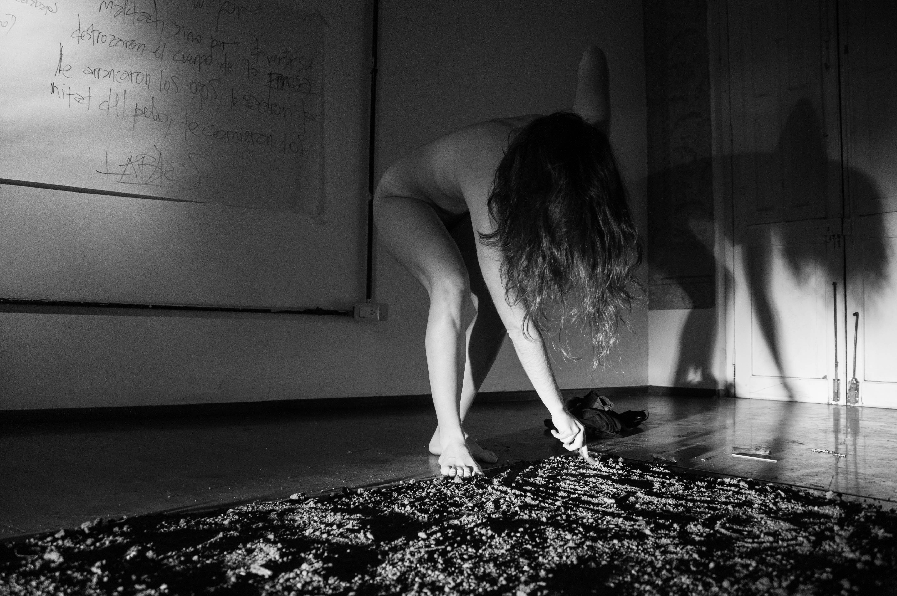
- Experiencia 8.
Lugar: Centro Cultural Casa de Pepino.
Materiales: papel, marcador con tinta negra y tierra.
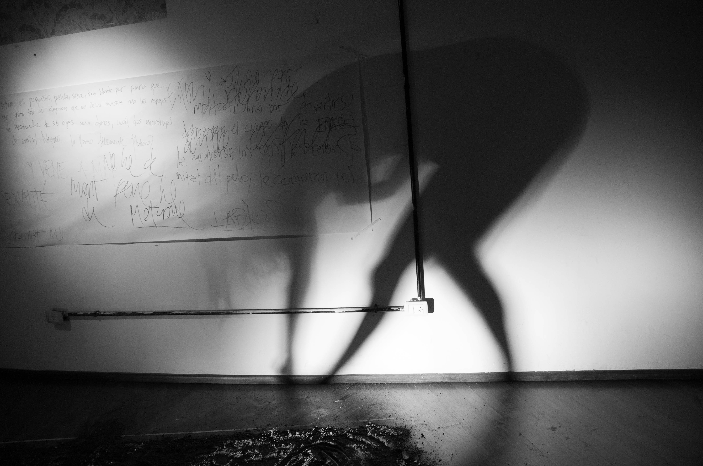
Lugar: Pabellón CePIA, Facultad de artes.
Materiales: Fibrones, tinta y ferrite de color negro con cola vinílica.
El eje transversal de esta acción realizada en tres partes consiste en la percepción háptica de mi cuerpo y el registro sincrónico como huella de dicha percepción dibujada por la mano derecha sobre el soporte.
Lugar: Centro Cultural Casa de Pepino. Materiales: Carbonilla y lápiz de grafito.
División del tiempo en dos partes Primera parte: El soporte papel se encuentra en dirección horizontal, en el suelo y ocupando una posición central con respecto a la puerta de ingreso a la sala.( Segunda parte: El soporte se encuentra en dirección vertical, sobre la pared izquierda, con respecto a la puerta de ingreso a la sala). Final: Al final de cada una de las etapas, los espectadores abrieron a una instancia de dialogo.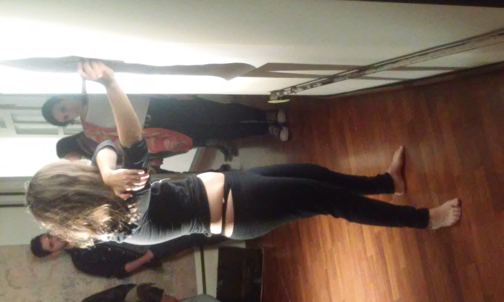
Lugar: “Centro Cultural Casa de Pepino”. Materiales: ferrite negro con cola vinílica- lápiz.
División del tiempo en dos partes Primera parte:Recorrido de la mano izquierda sobre el cuerpo, por lo que registro esas sensaciones con la mano derecha, la cual dibuja con un pincel cargado de ferrite con cola vinílica. El soporte de las representaciones se encuentra adherido al piso, en una posición central de la sala. Segunda parte: Recorrido de la mano izquierda, registro con la mano derecha, la cual dibuja con lápiz en esta etapa. El soporte de las representaciones se encuentra adherido a la pared cercana a la entrada.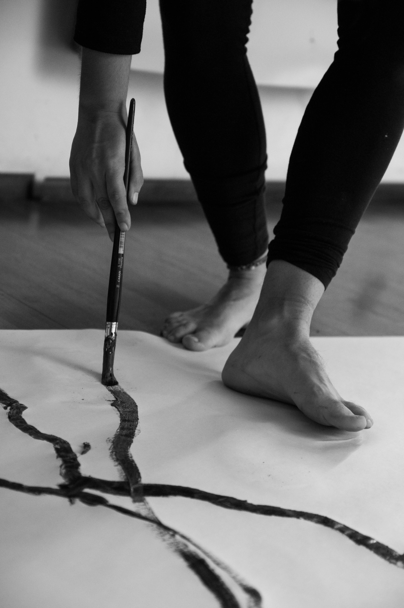
Lugar: Centro Cultural Casa de Pepino. Material: marcador con tinta al agua, color negro.
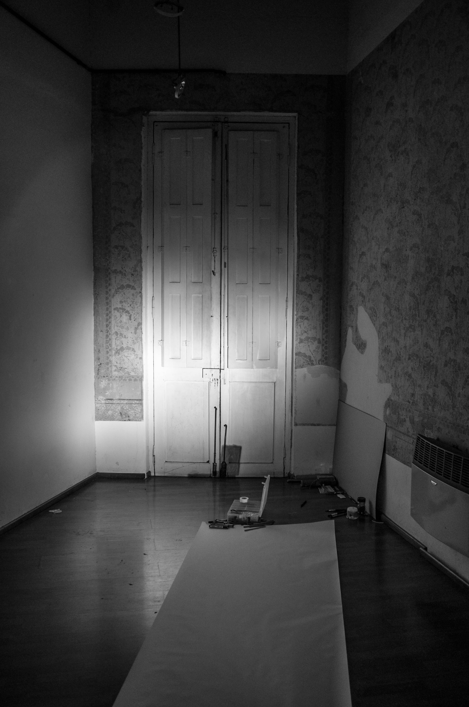Lugar: Centro Cultural Casa de Pepino. Materiales: marcador con tinta negra.
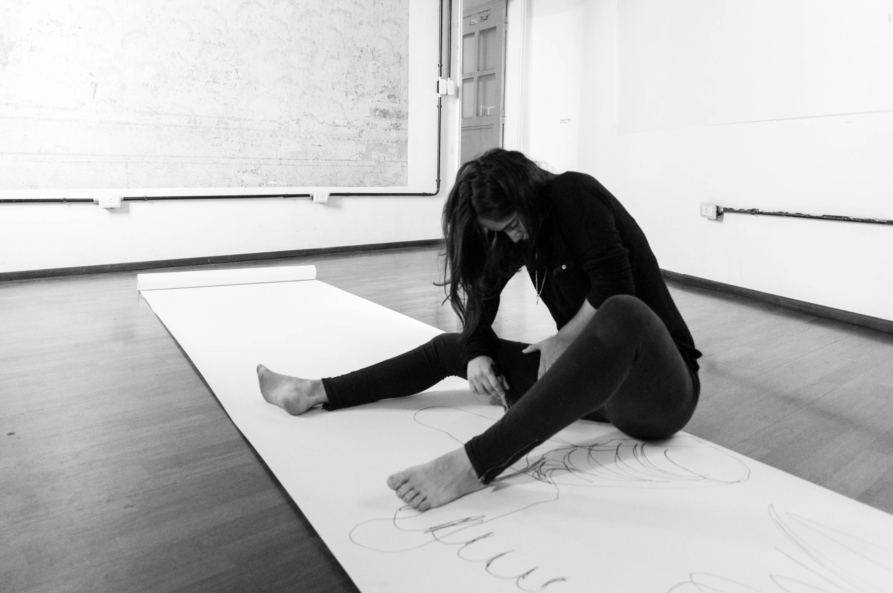Lugar: Departamento particular, Córdoba. Materiales: marcador con tinta negra.
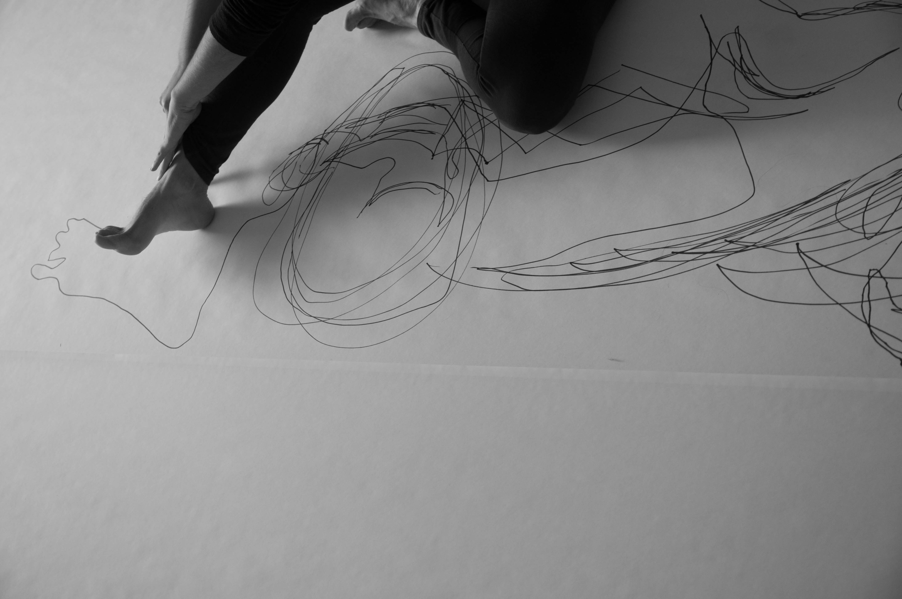Lugar: Centro Cultural Casa de Pepino. Materiales: Papel, fibrón, tierra negra.
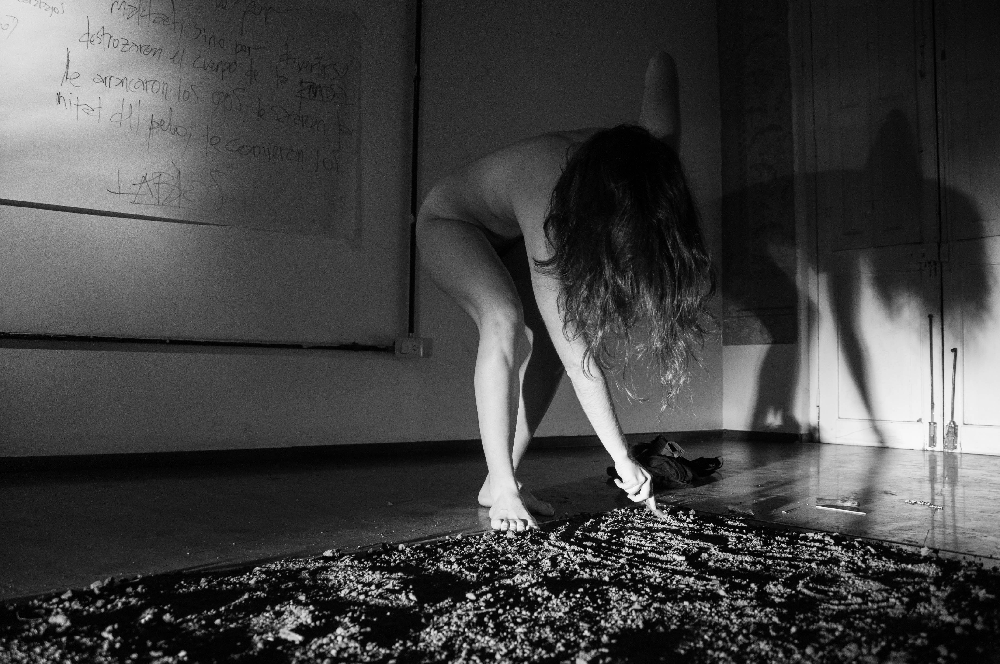
Lugar: Centro Cultural Casa de Pepino.
Materiales: papel, marcador con tinta negra y tierra.